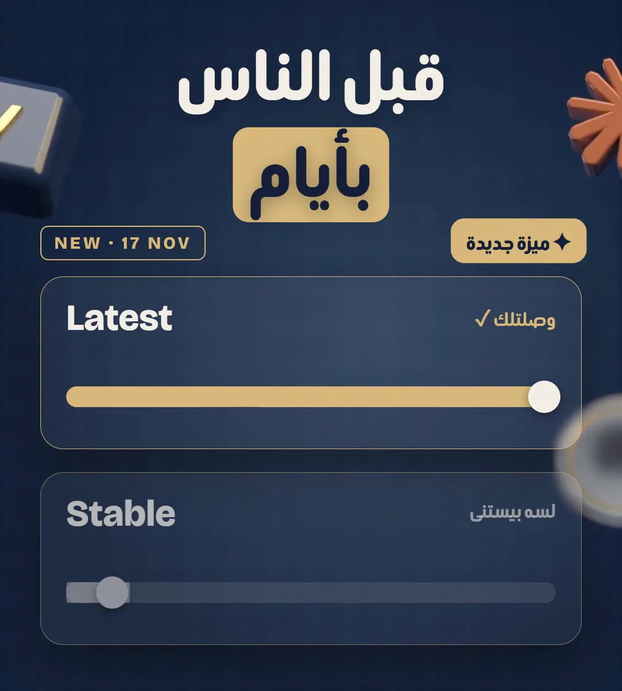
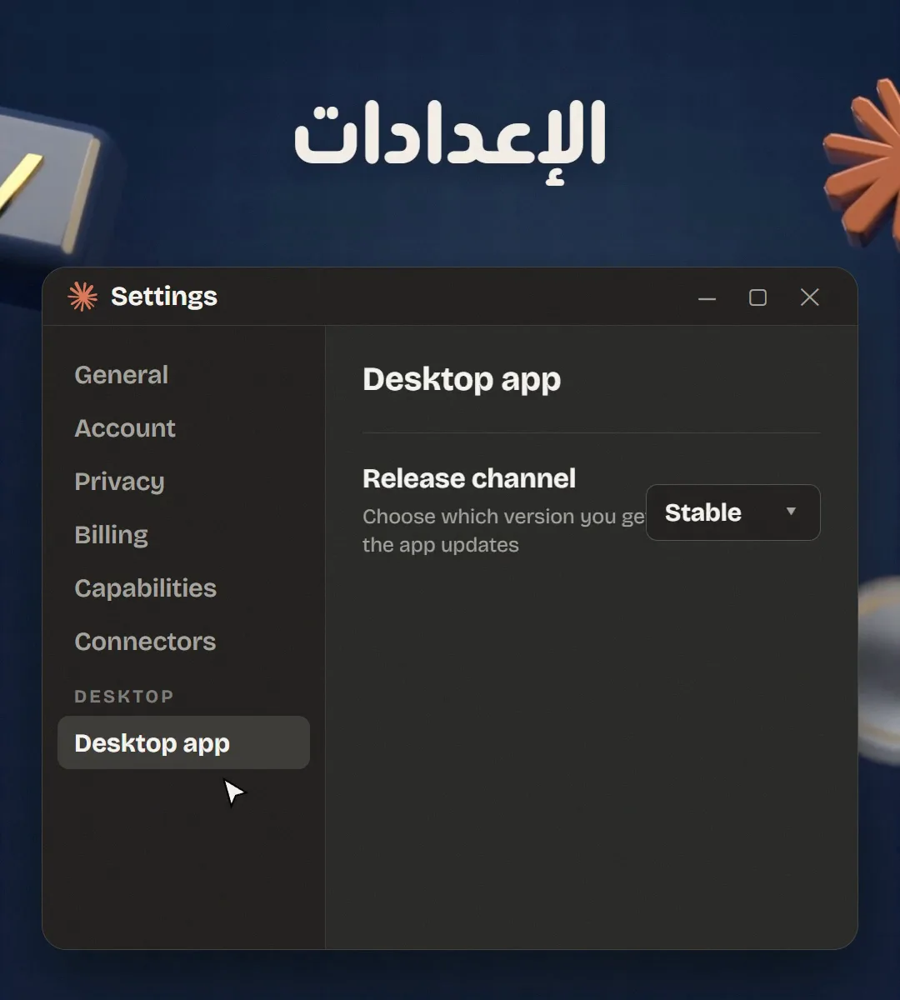
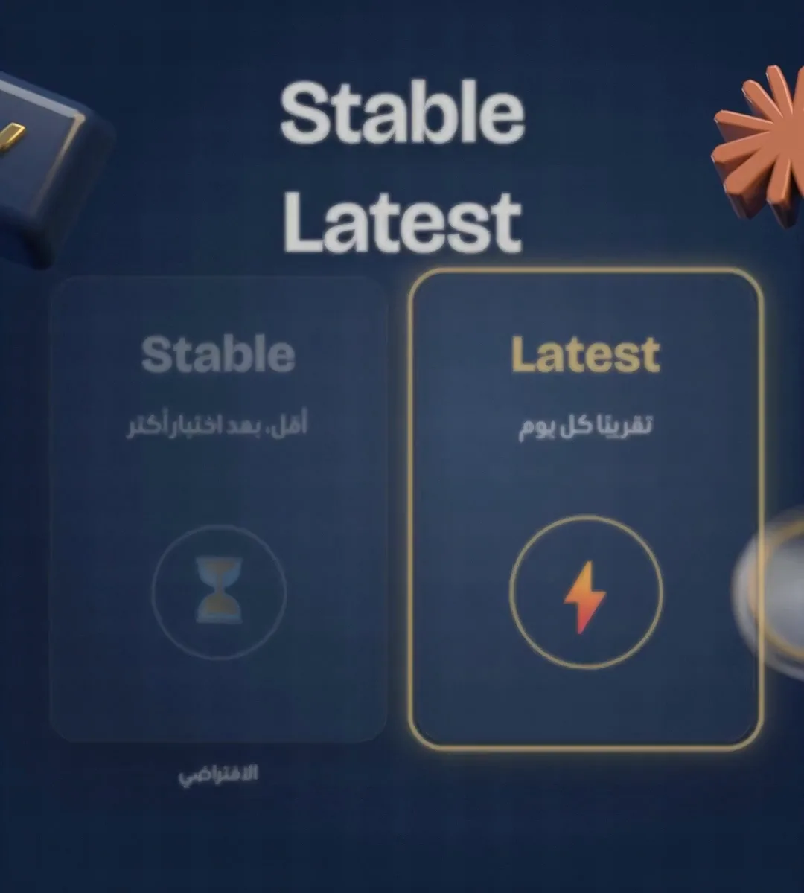
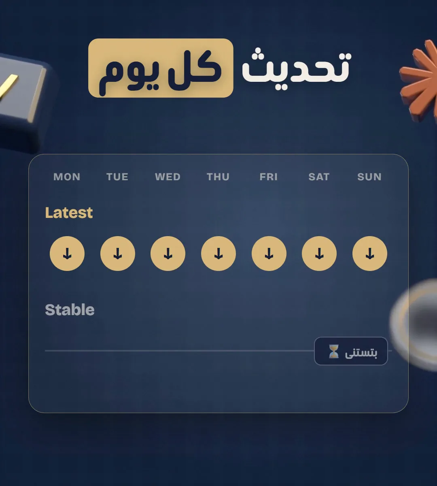
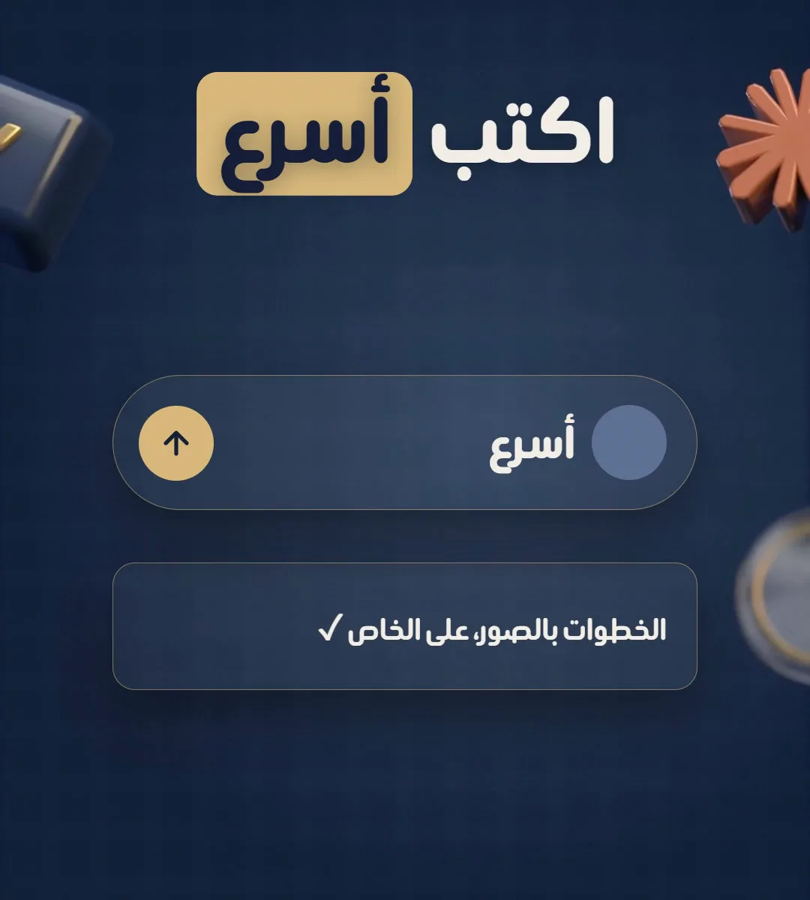

قبل النــاسبأيـــام
من 17 نوفمبر 2026، تطبيق Claude على الكمبيوتر فيه اختيار اسمه Release channel. لو خليته Latest، التحديثات والمميزات الجديدة بتوصلك تقريبًا كل يوم. دي الخطوات بالظبط.


- 01
إيه الجديد؟
فيه دلوقتي قناتين للتحديث في Claude Desktop: Stable وده الافتراضي، بيجيله تحديث أقل وبعد اختبار أكتر. وLatest، بيجيله تحديث تقريبًا مرة كل يوم، فالإصلاحات والمميزات الجديدة بتوصلك أسرع.
ملاحظات الإصدار من Anthropic (17 نوفمبر) ↗
من الريل: Latest بيوصل الأول، وStable بعده بأيام - 02
افتح الإعدادات
في تطبيق Claude على الكمبيوتر افتح Settings، وانزل في القايمة اللي على الجنب لحد Desktop app ودوس عليها.

من الريل: Settings ← Desktop app ← Release channel - 03
اختار Latest
تحت Release channel هتلاقي Stable مختارة. غيّرها لـ Latest. التغيير بيشتغل أول ما التطبيق يدوّر على تحديث. عايزه حالًا؟ اقفل الإعدادات واختار Claude ← Check for Updates على الماك، أو Help ← Check for Updates على الويندوز. هتعرف إنك على Latest لما تلاقي كلمة latest جنب رقم النسخة في About Claude.

من الريل: الاختيار بيتنقل من Stable لـ Latest - 04
تحديث كل يوم
على Latest بيجيلك تحديث تقريبًا كل يوم، بس ممكن يبقى أقل ثباتًا من Stable. لو شغلك مهم ومش عايز مفاجآت، خليك على Stable.

من الريل: Latest بيتحدّث كل يوم تقريبًا - 05
ترجع Stable؟
اختار Stable تاني من نفس المكان. ده مش بيرجّع نسختك لورا: هتفضل على نسخة Latest اللي عندك لحد ما تنزل نسخة Stable أحدث منها، ولحد ساعتها مش هيجيلك تحديثات Stable (حتى إصلاحات الأمان المستعجلة). وAnthropic بتقول ما تمسحش التطبيق وتنزّله تاني عشان ترجع أسرع، لأن ده ممكن يضيّع بيانات متخزنة على جهازك.
صفحة Install Claude Desktop ← Choose a release channel ↗
من الريل - 06
مش ظاهرة عندك؟
الاختيار موجود على كل الباقات، بس على ماك وويندوز بس. مش موجود على لينكس، ولا لو منزّل التطبيق من Microsoft Store، ولا على جهاز الشغل لو الـ IT عاملين سياسة لـ Claude. ولازم نسخة Claude Desktop تكون 4.29.0 أو أحدث. ولو الاختيار رمادي على ويندوز يبقى عندك المثبّت القديم، وتغييره محتاج تنزّل التطبيق من جديد من صفحة التحميل (احفظ شغلك الأول).
تحميل Claude Desktop ↗ - 07
شغال على Claude؟
لو عايز Claude يشتغل في براندك (مواقع، موشن، ريلز)، شوف خدماتي وابعتلي وأقولك السعر حسب اللي محتاجه.
خدمات HOSSO ↗
عايز حد يعملهولك؟
مش فاضي تتعلم وتعمل بنفسك؟ أنا بعمل ريلز لبراندك بنفس الطريقة اللي بشرحها هنا.